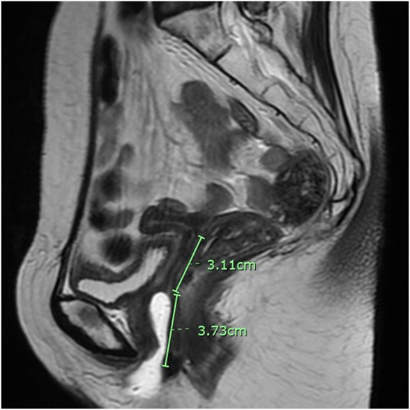
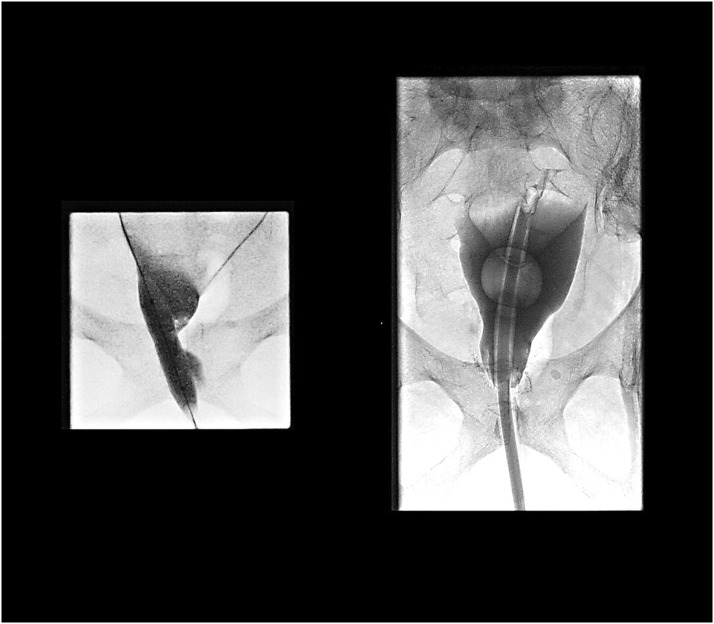

562 — Hẹp âm đạo sau xạ trị ung thư cổ tử cung: đo độ dài – phân độ CTCAE/LENT-SOMA, nong định kỳ, mold/stent và tạo hình
Tags: pattern:hep-am-dao pattern:xo-hoa-sau-xa vung:am-dao vung:khung-chau score:CTCAE score:LENT-SOMA protocol:MRI-chau
Mức chắc chắn (certainty): tổng hợp y văn (literature synthesis) — tổng hợp từ 1 phân tích gộp 24 nghiên cứu (Raj 2024), 1 tổng quan về hẹp âm đạo do xạ (Varytė 2021), 1 đồng thuận Delphi 32 chuyên gia (Matos 2019), 1 thử nghiệm ngẫu nhiên 142 bệnh nhân (Martins 2021), 1 nghiên cứu 67 bệnh nhân dùng dilator in 3D (Kongwattanakul 2026) và 2 ca nguyên văn có ảnh mở; mọi số liệu đối chiếu trực tiếp PMCID ghi trong sources.md.
1. Tổng quan bệnh học – cơ chế hình ảnh
- Định nghĩa: hẹp âm đạo do xạ (radiation-induced vaginal stenosis – VS) là tình trạng hẹp chu vi và/hoặc ngắn ống âm đạo do xơ hóa sau chiếu xạ vùng chậu, biểu hiện bằng giao hợp đau, không giao hợp được, khó đặt tampon và không thể khám phụ khoa đầy đủ (hệ quả nguy hiểm: che giấu tái phát tại vòm).
- Cơ chế (pathogenesis): xạ gây tổn thương biểu mô âm đạo, mô liên kết và vi mạch → viêm cấp, chết tế bào, giảm tưới máu và thiếu oxy mô, mất elastin, tăng tổng hợp collagen và hyalin hóa. Kết quả là thành âm đạo dày, mất đàn hồi, dính thành trước–sau, co kéo chu vi và rút ngắn ống âm đạo. Tổn thương thường rõ nhất sau 6–12 tháng và có thể tiến triển tới bít hoàn toàn.
- Dịch tễ – tần suất (số liệu định lượng):
- Trong phân tích gộp 24 nghiên cứu (Raj 2024): hẹp âm đạo là độc tính hay gặp nhất, tần suất trung vị 61,5% (khoảng 20–77,8%); gộp chung mọi độc tính âm đạo 39% (KTC 95%: 21–56%).
- Độc tính nặng (độ ≥ 3) rất khác nhau theo thang đo: 12,74% theo CTCAE v4.0, 0,98% theo CTCAE v3.0, 10,41% theo RTOG/EORTC và 0% theo LENT-SOMA — cho thấy không thể so sánh các nghiên cứu nếu khác thang phân độ.
- Ước tính trong 3 năm đầu sau xạ (Varytė 2021): ung thư nội mạc 50%, ung thư cổ tử cung 60%, ung thư hậu môn–trực tràng 80%.
- Quan hệ liều – đáp ứng (dữ liệu mạnh nhất, EMBRACE – 630 bệnh nhân ung thư cổ tử cung): nguy cơ hẹp có triệu chứng trong 24 tháng là 16% ở 55 Gy, 20% ở 65 Gy, 27% ở 75 Gy, 34% ở 85 Gy và 43% ở 95 Gy tại điểm tham chiếu trực tràng–âm đạo (rectovaginal reference point). Đây là ngưỡng để bàn với bác sĩ xạ trị khi lập kế hoạch, không phải ngưỡng chẩn đoán trên ảnh.
- Yếu tố nguy cơ: tuổi cao, u xâm lấn thành âm đạo, độ dài âm đạo nằm trong trường chiếu, phối hợp xạ ngoài (EBRT) + xạ áp sát (brachytherapy – BT), liều tại các điểm âm đạo. Trong một nghiên cứu, hẹp độ 2 liên quan có ý nghĩa với tuổi cao hơn, có xâm lấn âm đạo, chiều dài âm đạo ngắn hơn, dùng applicator buồng trứng–âm đạo (TO) và mọi điểm liều âm đạo.
- TẠI SAO hình ảnh trông như vậy (vật lý + mô bệnh):
- Xơ hóa trưởng thành/hyalin mất nước và ít proton tự do → T2 giảm tín hiệu thành dải hoặc vòng tối; mô xơ ngấm thuốc chậm và ít ở thì sớm, có thể ngấm ở thì muộn.
- Niêm mạc âm đạo bình thường giàu nước và glycogen → T2 tăng tín hiệu; khi bị xạ, lớp này mất tín hiệu sáng và không còn nhìn thấy rõ — đây là dấu hiệu sớm trên MRI.
- Ứ dịch sau hẹp: dịch ứ trong ống âm đạo tạo khối dạng nang ở tiểu khung. Nếu là máu cũ (hematocolpos), hemoglobin thoái hóa thành methemoglobin → T1 tăng tín hiệu; nếu mủ (pyocolpos), dịch T2 tăng, có viền ngấm thuốc và hạn chế khuếch tán, kèm sốt/đau.
- Trên CT: mô xơ đồng đậm độ cơ, khó phân biệt; giá trị chính là thấy khối dịch căng ống âm đạo, khí trong ống sau dẫn lưu, và biến chứng (áp-xe, rò).
- Điểm mấu chốt lâm sàng: hẹp âm đạo không chỉ là vấn đề chất lượng tình dục — nó làm mất khả năng theo dõi tái phát bằng khám phụ khoa, nên phải đo và ghi nhận như một dấu sinh tồn (vital sign) của theo dõi ung thư.
2. Mẫu hình + chẩn đoán phân biệt theo vị trí (gamut)
- Mẫu hình A — hẹp lan tỏa chu vi, 1/3 trên âm đạo (vòm): hay gặp nhất sau BT áp sát liều cao cho ung thư cổ tử cung; vòm dính, ống âm đạo ngắn < 5 cm, thành dày đối xứng. Gamut: hẹp do xạ, tái phát u tại vòm, xơ hóa sau mổ + xạ.
- Mẫu hình B — dính ngang (transverse band) hoặc hẹp lỗ âm đạo: dải xơ ngang chia ống âm đạo thành 2 khoang; gặp sau xạ âm hộ/âm đạo hoặc lichen planus thể ăn mòn. Gamut: dính sau xạ, vách ngang bẩm sinh, lichen planus, hẹp sau chấn thương/sinh.
- Mẫu hình C — ứ dịch âm đạo (fluid-filled vagina): khối dịch căng, đau bụng dưới/đau vùng chậu, có thể sốt. Gamut: hematocolpos (máu cũ T1 cao), pyocolpos (mủ, viền ngấm, hạn chế khuếch tán), hydrometra/hydrocolpos do tắc, nang Gartner, nang Bartholin lớn.
- Mẫu hình D — khối đặc ở vòm âm đạo: gamut: tái phát ung thư cổ tử cung, xơ hóa dày khu trú, sa vòm, polyp, sarcoma sau xạ (hiếm). Không được sinh thiết mù vào vùng xơ sau xạ nếu chưa loại trừ tái phát bằng MRI/PET.
- Mẫu hình E — hẹp sau tạo hình âm đạo (neovagina): hẹp vòng nối, co thắt vòng miệng nối, hoặc hẹp toàn bộ ống tân tạo; thường do không dùng dilator/mold đều sau mổ. Gamut: hẹp sau tạo hình, hẹp do xạ trên nền tân âm đạo, nhiễm trùng miệng nối.
- Gợi nhớ lâm sàng – hình ảnh: Shortening + Scar + Stasis (ứ dịch) = 3S của hẹp âm đạo sau xạ. Hỏi thêm 3 câu: giao hợp có đau/không thể không? còn kinh nguyệt không (ứ máu)? khám phụ khoa có đặt được mỏ vịt không?
3. Bảng so sánh phân biệt (ma trận đối chiếu)
| Thực thể (entity) | Hình ảnh điển hình (MRI/CT/US) | Chốt vào (rule-in) | Chốt loại (rule-out) | Gợi ý xác nhận |
|---|---|---|---|---|
| Hẹp âm đạo do xạ | Thành âm đạo dày, dải/vòng T2 tối, mất lớp niêm mạc T2 sáng, ống ngắn, vòm dính; không khối đặc | Tiền sử xạ vùng chậu + hẹp lan tỏa đối xứng + không có khối ngấm bất thường | Có khối đặc ngấm mạnh/hạn chế khuếch tán → nghĩ tái phát | Đo chiều dài/đường kính bằng dilator; MRI chậu T2; đối chiếu liều xạ |
| Tái phát tại vòm/âm đạo | Khối đặc ở vòm, T2 trung gian, DWI hạn chế khuếch tán, ngấm mạnh, có thể xâm lấn trực tràng/bàng quang | Khối đặc mới + DWI sáng + ngấm mạnh + FDG tăng | Xơ hóa dải mỏng, không khối, DWI không sáng → nghĩ xơ | MRI có cản quang + PET/CT; sinh thiết có hướng dẫn |
| Vách ngang bẩm sinh | Màng/dải ngang đơn độc, thành âm đạo trên và dưới bình thường, không xơ lan tỏa | Không tiền sử xạ + màng ngang rõ + tử cung bình thường | Thành âm đạo dày, xơ lan tỏa, có tiền sử xạ → nghĩ hẹp do xạ | MRI; khám dưới mê; siêu âm |
| Lichen planus âm đạo | Mảng trắng, trợt, dính lỗ âm đạo và môi bé, hẹp dần theo thời gian | Tổn thương da–niêm mạc trắng/trợt + ngứa/đau + không tiền sử xạ | Chỉ hẹp ống, không tổn thương da → ít nghĩ | Khám da liễu, sinh thiết niêm mạc |
| Hẹp sau tạo hình neovagina | Vòng xơ tại miệng nối hoặc hẹp toàn bộ ống, có thể ứ dịch | Tiền sử tạo hình + không dùng mold/dilator đều | Tân âm đạo rộng, niêm mạc hồng → không hẹp | Đo bằng mold; MRI khi nghi ứ dịch/áp-xe |
| Hematocolpos / pyocolpos | Khối dịch căng ống âm đạo; máu cũ T1 cao; mủ T2 cao + viền ngấm + DWI sáng | Đau bụng dưới + khối dịch + hẹp lỗ âm đạo; sốt/CRP cao → nghĩ mủ | Không có dịch ứ, ống thông thoáng → loại | MRI chậu; CT; dẫn lưu để chẩn đoán và điều trị |
| GVHD âm đạo sau ghép tế bào gốc | Dính, hẹp, loét niêm mạc; kèm tổn thương da/miệng/gan | Tiền sử ghép + tổn thương đa cơ quan GVHD | Chỉ hẹp đơn độc, không tiền sử ghép → ít nghĩ | Đánh giá GVHD toàn thân; sinh thiết |

MRI T2 sagittal sau xạ trị: chiều dài âm đạo 3,73 cm, phần vòm bịt kín 3,11 cm — hẹp mức độ nặng. Đo bằng thước trên phần mềm; đây là cách ghi nhận khách quan để theo dõi. Nguồn: Bodily 2025, CC BY 4.0.4. Protocol chụp + hệ phân độ/điểm chuẩn hóa
Bước 1 — đo lâm sàng (bắt buộc, làm trước hình ảnh):
- Đo chiều dài âm đạo bằng thước chia mm hoặc dilator đã biết đường kính, ghi cm; đo đường kính ống (số ngón tay tương ứng hoặc dụng cụ).
- Đánh giá niêm mạc: hồng – teo – trợt – dính; ghi vị trí hẹp (1/3 trên/giữa/dưới), tính chất (vòng, dải ngang, lan tỏa).
- Khám nhẹ nhàng, không banh cưỡng bức; nếu đau nhiều, khám dưới gây mê để tránh rách và để đo chính xác.
Bước 2 — hình ảnh:
- MRI chậu là phương thức chuẩn: T2 sagittal + axial (lát cắt vuông góc trục âm đạo), T1 (tìm máu cũ), DWI/ADC (loại trừ tái phát/áp-xe), T1 fat-sat sau gadolinium khi nghi khối hoặc áp-xe. Đo chiều dài, đường kính, độ dày thành, khoảng cách tới trực tràng/bàng quang.
- Siêu âm đầu dò âm đạo/trực tràng hoặc siêu âm qua đáy chậu khi không đưa được đầu dò vào; giá trị chính là phát hiện ứ dịch và hướng dẫn thủ thuật.
- CT khi cần can thiệp/dẫn lưu hoặc khi MRI chống chỉ định; PET/CT khi nghi tái phát hoặc di căn.
- Không dùng CT làm phương tiện đo hẹp thường quy vì mô xơ đồng đậm độ và bức xạ thêm.
Bước 3 — phân độ (ghi rõ thang đo trong hồ sơ):
- CTCAE v5.0 — vaginal stricture: độ 1 không triệu chứng, ngắn/hẹp nhẹ; độ 2 hẹp/ngắn nhưng không cản trở khám thực thể; độ 3 cản trở dùng tampon, hoạt động tình dục hoặc khám thực thể; độ 4 không định nghĩa trong bảng này; độ 5 tử vong.
- LENT-SOMA (RTOG/EORTC): đánh giá 4 trục Subjective – Objective – Management – Analytic. Với hẹp, trục Management tăng dần: nong không thường xuyên → nong liên tục → nong dai dẳng → phẫu thuật tạo hình. Đây là thang mô tả mức can thiệp, không phải thang đo chiều dài.
- Khuyến cáo: dùng cùng một thang ở mọi lần tái khám để so sánh; ghi số đo cm bên cạnh độ.
Bước 4 — dự phòng (bắt đầu trước khi hẹp hình thành):
- Thời điểm: bắt đầu nong 2–4 tuần sau kết thúc xạ hoặc khi niêm mạc đã hồi phục (khoảng 4 tuần) — theo đồng thuận Delphi (Matos 2019).
- Liều nong: 5–10 phút, 2–3 lần/tuần, kéo dài vô thời hạn (đồng thuận); một số trung tâm dùng 3 lần/tuần × 20 phút. Bắt đầu bằng đường kính nhỏ rồi tăng dần; dùng chất bôi trơn.
- Giao hợp: có thể trở lại 2–4 tuần sau xạ khi niêm mạc hồi phục và người bệnh sẵn sàng.
- Tuân thủ thực tế thấp: trong 519 bệnh nhân sau BT, chỉ 49,1% dùng dilator đều; 24,5% không giao hợp và cũng không dùng dilator — đây là nhóm nguy cơ cao nhất.
- Vai trò thuốc tại chỗ: thử nghiệm ngẫu nhiên 142 bệnh nhân (4 nhóm: dilator, estrogen tại chỗ, testosterone tại chỗ, đối chứng) cho thấy thể tích âm đạo giảm trung bình 25,47%, không khác biệt giữa các nhóm; tuy nhiên nhóm dùng dilator là nhóm duy nhất không xấu đi theo thời gian (p = 0,37) — tức dilator là can thiệp có bằng chứng nhất, hormone tại chỗ không thay thế được.
Bước 5 — điều trị khi đã hẹp:
- Nong/dilator tích cực ± mold in 3D giữ liên tục (kể cả ban đêm) sau khi giải phóng dính; mold cá nhân hóa giúp duy trì chu vi mà ít phụ thuộc tuân thủ.
- Nong bóng dưới hướng dẫn huỳnh quang/CT cho hẹp hoàn toàn không có đường vào: tạo đường hầm, nong bóng 12 mm rồi tăng dần, đặt catheter/Foley 26 Fr giữ đường — chỉ định ở trung tâm có kinh nghiệm.
- Phẫu thuật: cắt dải xơ/giải phóng dính, ghép da mỏng hoặc vạt cân–cơ khi thiếu niêm mạc; tạo hình âm đạo khi bít hoàn toàn. Sau mổ bắt buộc dùng mold/dilator để chống dính lại.
- Hỗ trợ: chất bôi trơn, estrogen tại chỗ (khi không chống chỉ định), vật lý trị liệu sàn chậu, tư vấn tình dục – tâm lý.
flowchart TD
A[Bệnh nhân sau xạ vùng chậu] --> B[Đo chiều dài và đường kính âm đạo bằng dilator]
B --> C{CTCAE độ mấy?}
C -->|Độ 1| D[Tư vấn nong 2-3 lần mỗi tuần, 5-10 phút, kéo dài]
C -->|Độ 2| E[Nong tích cực + kiểm tra lại 3 tháng]
C -->|Độ 3| F[MRI chậu T2 + DWI để loại trừ tái phát]
C -->|Độ 4| G[Khám dưới mê + MRI + cân nhắc can thiệp]
F --> H{Có khối đặc hoặc DWI sáng?}
H -->|Có| I[Sinh thiết có hướng dẫn + PET/CT]
H -->|Không| J[Nong bóng hoặc mold 3D]
G --> K[Nong bóng dưới huỳnh quang hoặc phẫu thuật tạo hình]
J --> L[Đánh giá lại 1-3 tháng, ghi số đo]
K --> L
L --> M{Tái hẹp?}
M -->|Có| K
M -->|Không| N[Duy trì dilator và theo dõi dài hạn]
5. Biến thể bình thường và cạm bẫy
- Teo âm đạo do thiếu estrogen sau xạ (niêm mạc mỏng, khô, mất nếp gấp) không đồng nghĩa hẹp xơ — phân biệt bằng độ đàn hồi và khả năng đặt mỏ vịt; teo đáp ứng estrogen tại chỗ, hẹp xơ thì không.
- Đánh giá quá sớm (< 3 tháng) dễ overcall vì còn viêm–phù cấp; chờ niêm mạc ổn định rồi đo lại.
- Đo bằng mỏ vịt có kéo làm ống âm đạo "dài giả"; đo bằng dilator/thước, tay nhẹ, không kéo.
- Sai lầm nguy hiểm nhất: gán mọi hẹp cho xạ rồi bỏ qua tái phát. Nếu hẹp bất đối xứng, có khối, đau tăng dần, chảy máu → MRI + PET trước, không sinh thiết mù.
- Bỏ sót ứ dịch: bệnh nhân còn tử cung sau xạ có thể bị hematocolpos gây đau bụng cấp; siêu âm/MRI thấy khối dịch căng ống âm đạo, T1 cao nếu máu cũ.
- Nong quá sớm/quá mạnh gây đau, chảy máu, rách niêm mạc → bỏ trị liệu; tuân thủ là yếu tố quyết định thành công.
- Không hỏi về tình dục vì "ngại" → bỏ lỡ cả hẹp và nhu cầu điều trị; đồng thuận khuyến cáo hỏi và tư vấn cho mọi bệnh nhân, kể cả người không có bạn tình.
- Nhầm với lichen planus/sclerosus: tổn thương da–niêm mạc trắng, trợt, ngứa và hẹp lỗ âm đạo; cần khám da liễu và sinh thiết.
- Không ghi nhận độ dài trước xạ: không có mốc so sánh → không đánh giá được mức mất; nên đo và ghi trước – ngay sau – 3, 6, 12 tháng.
6. Tự lượng giá — Blind Quiz
Ca 1 — Nữ 54 tuổi, xạ trị ung thư cổ tử cung 14 tháng trước, giao hợp đau và không thể khám phụ khoa. Nhìn MRI, mô tả trước.
- Gợi ý lâm sàng: không sốt, không chảy máu; khám thấy lỗ âm đạo hẹp, không đặt được mỏ vịt.
- Câu hỏi: (1) Đo chiều dài âm đạo và phần bịt kín trên ảnh. (2) Phân độ CTCAE. (3) Hai chẩn đoán phân biệt cần loại trừ và cách loại trừ?
Bấm để hiện đáp án (findings + chẩn đoán)
- Dấu hiệu: ống âm đạo dài 3,73 cm, phần vòm bịt kín 3,11 cm; thành âm đạo dày, mất lớp niêm mạc T2 sáng.
- Chẩn đoán: hẹp âm đạo do xạ mức độ nặng; theo CTCAE v5 là độ 3 (cản trở khám thực thể/hoạt động tình dục).
- Loại trừ: tái phát tại vòm (MRI có cản quang + DWI; PET/CT nếu nghi) và ứ mủ/máu âm đạo (T1 cao = máu cũ; viền ngấm + DWI sáng + sốt = mủ).
- Xử trí: nong bóng/mold 3D hoặc phẫu thuật giải phóng + mold; theo dõi số đo mỗi 1–3 tháng.
- Nguồn: Bodily 2025, CC BY 4.0, PMCID PMC12421974.
Ca 2 — Bệnh nhân bít hoàn toàn âm đạo sau xạ, không tìm được đường vào. Ảnh huỳnh quang dưới đây làm gì?

- Gợi ý lâm sàng: đau vùng chậu, không giao hợp được, đã thất bại nong tại nhà.
- Câu hỏi: (1) Kỹ thuật trong ảnh? (2) Chỉ định và chống chỉ định? (3) Theo dõi sau thủ thuật?
Bấm để hiện đáp án (findings + chẩn đoán)
- Kỹ thuật: tạo đường hầm và nong bóng (balloon dilatation) dưới hướng dẫn huỳnh quang/CT, bắt đầu bóng 12 mm, sau đó tăng dần và đặt catheter/Foley 26 Fr giữ đường.
- Chỉ định: hẹp/bít hoàn toàn không có đường vào, thất bại nong thường quy, có triệu chứng (đau, ứ dịch) và đã loại trừ tái phát.
- Chống chỉ định: nghi tái phát/áp-xe chưa xử lý, rò hoạt động, nhiễm trùng cấp, rối loạn đông máu nặng.
- Theo dõi: đau, chảy máu, nhiễm trùng; dùng mold/dilator sớm để giữ đường; MRI/khám lại 1–3 tháng.
- Nguồn: Mushtaq 2023, CC BY-NC-ND 4.0, PMCID PMC10493260 — ảnh giữ nguyên, không crop/ghép. Ca gốc là bít tân âm đạo sau tạo hình bằng vạt cho ung thư trực tràng, không phải xạ trị cổ tử cung; dùng để minh họa kỹ thuật, không dùng để suy ra tỷ lệ thành công.
Câu 3 (không ảnh) — Bệnh nhân hỏi "có cần nong mãi không?". Trả lời dựa trên bằng chứng nào?
Bấm để hiện đáp án
- Đồng thuận khuyến cáo nong 2–3 lần/tuần, 5–10 phút, kéo dài vô thời hạn (có thể giảm tần suất nếu giao hợp đều); bắt đầu 2–4 tuần sau xạ.
- Bằng chứng mạnh nhất: thử nghiệm ngẫu nhiên 142 bệnh nhân — thể tích âm đạo giảm 25,47% ở toàn nhóm, chỉ nhóm dùng dilator không xấu đi (p = 0,37); hormone tại chỗ không thay thế dilator.
- Cần tư vấn cả tình dục, tâm lý và lịch khám; tuân thủ chỉ 49,1% nên phải có kế hoạch nhắc và hỗ trợ.
- Nguồn: Matos 2019 (PMC6688793, CC BY 4.0); Martins 2021 (PMC8191143, CC BY 4.0); Martins da Rosa 2024 (PMC11807004, CC BY 4.0).
Bài liên quan chéo
- 582 — Biến chứng tiêu hóa–niệu sau xạ trị phụ khoa: viêm trực tràng xạ, rò trực tràng–âm đạo
- 577 — Theo dõi & phát hiện tái phát ung thư phụ khoa: RECIST, CA-125, CT/MRI/PET-CT
- 590 — Tạo hình âm đạo MRKH: so sánh kỹ thuật & biến chứng muộn
- 574 — Ung thư âm hộ & âm đạo: FIGO + hạch bẹn–đùi & SLN
Không dùng để chẩn đoán độc lập khi chưa có người hướng dẫn.